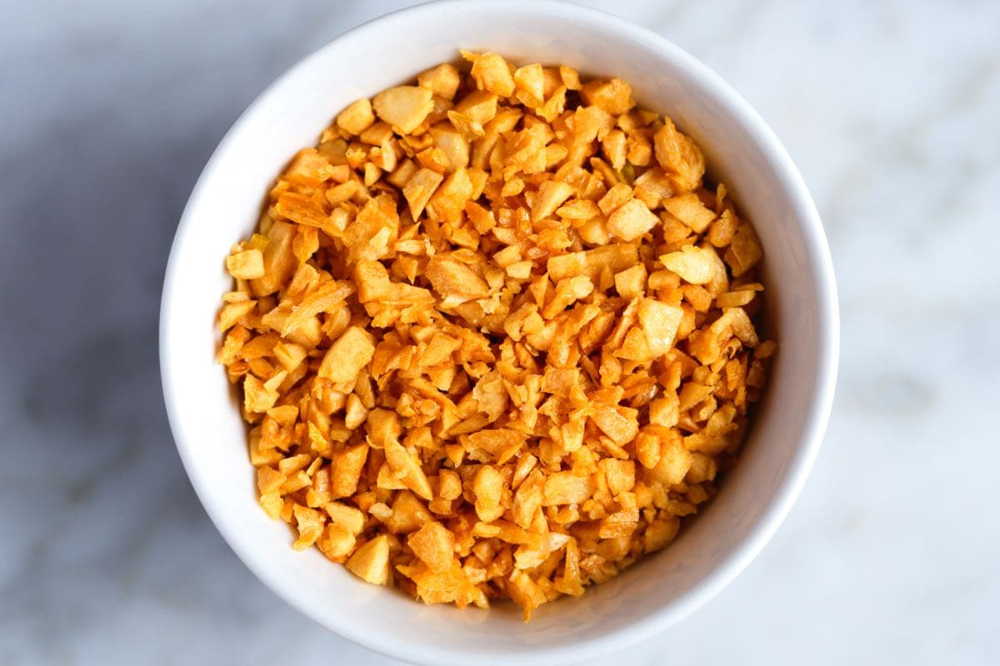

Crispy Garlic
Home

Super Crunchy Crispy Garlic
The recipe of Super Crunchy Crispy Garlic will take a little longer as to not burn the garlic which would taste bitter (not better). Surprisingly, it would look like the picture if you follow this recipe.
Ingredients
- Lotsa Cooking Oil
- 2 whole garlic
- salt
- (optional) chili oil/flakes
Steps
- Peel the garlic cloves with whatever black magic technique you know
- Mince to little tiny bits
- Heat a deep pan/wok as it is
- Add lotsa cooking oil into the pan
- Add the garlic with some salt
- Cook until it becomes lightish golden brown
- If you wish to add heat, add chili oil/flakes
- If you added the chili, pour the chili garlic into a jar with the oil
- Else if (no chili bruh), drain the garlic of the oil
- Wow so cripy :-D